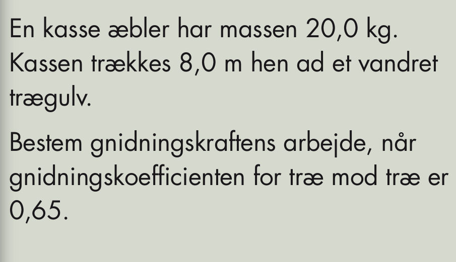
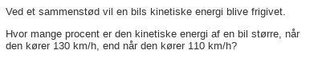

Arbejde og energi
Mekanik
Jacob Debel
Fysik B & A
Arbejde og effekt
Arbejde
Lægmandssprog:
Arbejde er lig kraft gange vej.
Matematisk sprog:
\[\boxed{A = \vec{F} \cdot \vec{s}}\]
- Husk at der er tale om vektorer.
- Prikken er et skalarprodukt (prikprodukt)
Eksempel
- \(A = \vec{F} \cdot \vec{s}\)
- \(A = F \cdot s \cdot \cos(\phi)\)
Eksempel
- Hvad er \(\phi\)?
Eksempel
- Hvad er \(\phi\)?
- Hvad er \(\phi\)?
Opgave 9.1.1
Arbejde og energi
Arbejde og energi
Termodynamikkens 1. hovedsætning
\[\Delta E = Q + A\]
- Energi er evnen til at udføre arbejde.
- Uden tilført varme er ændring i indre energi lig arbejde.
Effekt
Effekt
\[P = \frac{\Delta E}{\Delta t}\]
\[P = \frac{A}{\Delta t}\]
\[P = \frac{F\cdot \Delta s}{\Delta t}\]
\[P = F\cdot \frac{\Delta s}{\Delta t}\]
\[P = F\cdot \boxed{\frac{\Delta s}{\Delta t}}\]
- Hvad er det nu det er?
\[P = F\cdot \boxed{v}\]
En krafts effekt er altså kraftens størrelse gange med (øjebliks)-hastigheden.
Gælder selvfølgelig også for vektorer.
\[\boxed{P = \vec{F} \cdot \vec{v}}\]
Opgave 9.1.2
Friktionskræfters arbejde
Friktionskræfters arbejde
- Når tørre overflader gnider mod hinanden er friktionskraften altid modsat rettet bevægelsesretningen.
\[\boxed{A_{\mu} = - \overrightarrow{F_{\mu}} \cdot \vec{s}}\]
Opgaver
Opgave ?

Opgave 9.3.1
Fjederkrafts arbejde
Fjederkrafts arbejde
\[\left| F_{fj}(x) \right|= k \cdot x\]
Fjederkrafts arbejde
- Arbejde er lig kraft gange vej.
- Arbejde er lig arealet under grafen.
- \(A_{fj}= \frac{1}{2} \cdot k \cdot x^2\)
Kan det paneres?
Kan det paneres integreres?
\[A_{fj} = \int_{x_1}^{x_2} F_{fj} \,dx\]
\[A_{fj} = \int_{0}^{x_0} k \cdot x \,dx\]
\[A_{fj} = \left[ \frac{1}{2}\cdot k \cdot x^2 \right]_0^{x_0}= \frac{1}{2}\cdot k \cdot x_0^2- \frac{1}{2}\cdot k \cdot 0^{2}\]
\[\boxed{A_{fj} = \frac{1}{2}\cdot k \cdot x_0^2}\]


Yderligere forlængelse
\[A_{fj} = \frac{1}{2}\cdot k\cdot x_2^2 - \frac{1}{2}\cdot k\cdot x_1^2\]
\[\boxed{A_{fj} = \frac{1}{2}\cdot k\cdot \left( x_2^2- x_1^2\right) }\]
Opgaver
Opgave 9.4.1
Opgave 9.4.2
Kinetisk energi
(Også kaldet bevægelsesenergi)
Kinetisk energi
- Hvad kan den kinetiske energi afhænge af?
Hvad kan den kinetiske energi afhænge af?
- Massen!
\[E_{kin} = ? \cdot \boxed{m} \cdot ?^{?}\]
- Farten!
\[E_{kin} = ? \cdot m \cdot \boxed{v}^{?}\]
Alles zusammen
\[\boxed{E_{kin} = \frac{1}{2}\cdot m \cdot v^2}\]
Opgaver
Regn selv
Opgave 9.5.2

Hvor kommer formlen fra?
\[\boxed{E_{kin} = \frac{1}{2}\cdot m \cdot v^2}\]
Hints:
- Arbejdet for den resulterende kraft
- "Arbejde er et værre mas"
- Hjælp fra "hjælpesætningen"
- \(v_0=0\), \(s_0=0\)
- Trylle, trylle, trylle
Trylle, trylle, trylle
Hvor kommer formlen fra?
\[E_{kin}=A_{F_{res}} = m \cdot \boxed{a \cdot s}\] \[s - s_0 = \frac{v^2-v_0^2}{2 \cdot a}\,,\, v_0=0\,,\, s_0=0\to\] \[a \cdot s = \frac{v^2}{2}\] \[E_{kin} = m \cdot \boxed{\frac{v^2}{2}}\] \[\boxed{E_{kin} = \frac{1}{2}\cdot m \cdot v^2}\]
Potentiel energi
(Også kaldet beliggenhedsenergi)
Potentiel energi
\[\boxed{E_{pot} = m \cdot g \cdot h}\]
Hvor kommer formlen fra?
- Energi oplagret i tyngdefeltet
- Omdannes til arbejde udført at tyngdekraften
- \(E_{pot}= A_{F_t} = F_t \cdot h\)
- \(\boxed{E_{pot}= m \cdot g \cdot h}\)
Opgave 9.2.1
Opgave regn selv

- Husk retning på både kraft og strækning.
Skrå bevægelse
- Lodret bevægelse
- \(A_{t, lodret} = - F_t\cdot h\)
- \(A_{t,lodret}= - m \cdot g \cdot h\)
- Skrå bevægelse
- \(A_{t,skrå}=F_t \cdot s \cdot \boxed{\cos(\phi)}\)
- \(A_{t,skrå}=F_t \cdot s \cdot \boxed{\frac{h}{s}} = m \cdot g \cdot h\)
- Arbejdets størrelse er den samme!
Opgave 9.2.2
Opgave 9.6.2
Blanding af potentiel energi og kinetisk energi
Mekanisk energi
Mekanisk energi
- Den mekaniske energi er summen af den kinetiske og potentielle energi
- \(\boxed{E_{mek} = E_{kin}+E_{pot}}\)
- Hvad er den mekaniske energi i de 3 viste situationer?
- Lad os gøre det på tavlen.
- \(E_{mek,1}=E_{mek,2}=E_{mek,3}=m g h\)
- Den mekaniske energi er bevaret, når der ingen friktion er til stede!
Opgaver
Ekstralækre opgaver
Fjeder og skråplan
En klods på 2.00 kg skubbes mod en fjeder med ubetydelig masse og en fjederkonstant på \(k=400N/m\). Fjederen sammenpresses med 0.220 m.
Når klodsen slippes bevæger den sig hen ad den vandrette overflade og op ad skråplanet. Begge dele er friktionsløse. Skråplanet har en vinkel med vandret på \(37^{\circ}\).
- Hvad er klodsens fart i det øjeblik, den slipper fjederen?
- Hvor langt op ad skråplanet bevæger klodsen sig, før end den begynder at glide ned igen?
Malerspande
To malerspande er forbundet af et (masseløst) reb. Systemet frigives med den 12 kg-tunge malerspand 2.0 m over gulvet. Friktion og masse af trissen kan ignoreres.
- Anvend princippet om energibevarelse til at beregne den fart, som den tunge spand rammer gulvet med.
En lastbil på afveje
En lastbil med defekte bremser og en masse \(m\) kører ned af en isglat bjergvej. Bjergvejen har en konstant hældning med vandret på \(\alpha\), og lastbilens begyndelsesfart er \(v_0\).
Efter at have tilbagelagt en strækning \(L\) uden nævneværdig friktion, styrer chaufføren lastbilen op ad en sikkerhedsrampe med en konstant hældning med vandret på \(\beta\). Sikkerhedsrampen har en overflade bestående af blødt sand, som giver en friktionskonstant på \(\mu\).
- Hvor langt bevæger lastbilen sig op ad sikkerhedsrampen, før end den standser op?